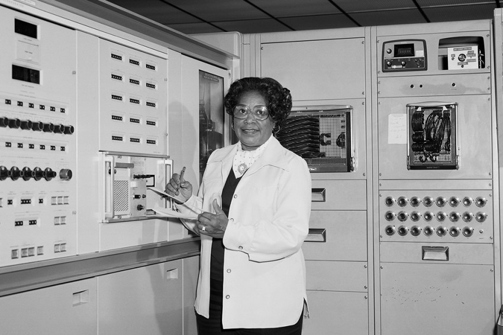
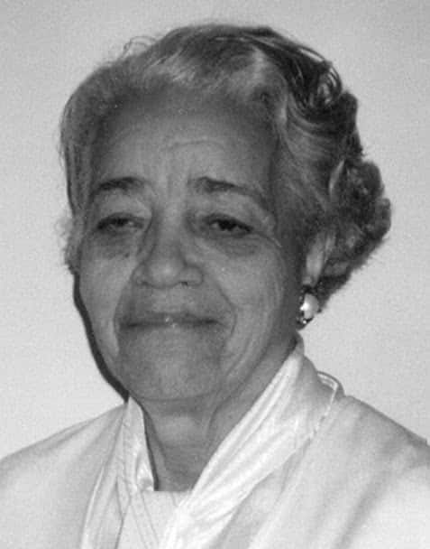
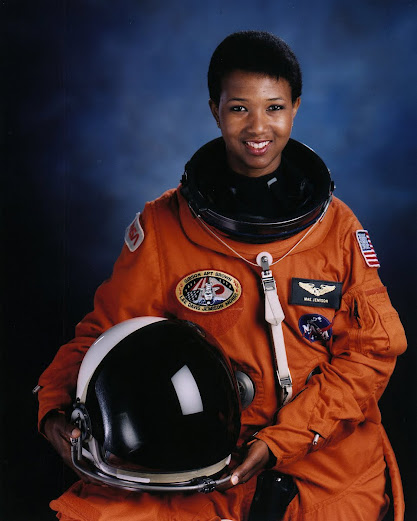

O primeiro homem a pisar na Lua foi Neil Armstrong, um engenheiro aeroespacial que se tornou um
dos astronautas da missão Apollo 11. "No dia 20 de julho de 1969, Neil Armstrong tornou-se o
primeiro homem a pisar na Lua. A bordo do módulo lunar Eagle, os astronautas Neil Armstrong e
Buzz Aldrin, ambos a serviço da missão Apollo 11, pousaram sobre a superfície da Lua, realizaram
diversos experimentos, hastearam a bandeira estadunidense e coletaram diversas amostras de rochas
e do solo lunar. Neil Armstrong tinha 39 anos de idade quando deu o seu primeiro passo na Lua.
Cerca de 20 minutos após a sua chegada, foi a vez do astronauta e piloto Buzz Aldrin."
"Neil Alden Armstrong (1930-2012) nasceu em Ohio, nos Estados Unidos, em 1930. Sua infância foi pacata,
era uma criança calma e que gostava muito de ler. Com oito anos, foi passado diretamente do segundo para
o quarto ano da escola, era considerado por seus professores como um aluno “nota dez”. De acordo com
algumas das entrevistas dadas por sua mãe, Viola Armstrong, Neil era extremamente focado em seus estudos."
⊙ Quem foi Mary Jackson?

Mary Jackson nasceu em Hampton, uma cidade no Estado da Virgínia, a 300 km de Washington, DC.
Hampton é uma cidade de maioria negra (51% da população), e abriga uma instituição de ensino superior
voltada à inclusão racial. É a Hampton University, fundada em 1868 por ativistas negros e brancos,
logo após a Guerra Civil Americana, com a ideia de prover educação de primeira linha a quem tinha nascido
como escravo. Uma das alunas ali foi Alberta Williams King, mãe de Martin Luther King, que estudou magistério
lá no início do século 20.
Mary Jackson formou-se em 1942. Trabalhou por décadas como engenheira na Nasa. E em 2020, 80 anos depois, a
agência espacial rebatizou sua sede, em Washington, com o nome dela. Não foi uma trajetória simples.
Os EUA dos anos 1940 viviam num sistema de apartheid. Em boa parte dos Estados, brancos e negros não
podiam estudar nas mesmas escolas, nem usar os mesmos banheiros, e o “casamento interracial” era crime.
No mercado de trabalho, então, era como se a escravidão não tivesse terminado – uma ferida que ainda está
longe de fechar, seja nos EUA, seja aqui.
⊙ Primeira mulher negra a ser designada como chefe de
departamento na nasa:
Dorothy Vaughan nasceu em 1910, nos Estados Unidos. Filha de Annie e Leonard Johnson.
Formou-se em 1925 no ensino médio, em Morgantown, cidade para qual sua família havia se mudado. Em 1929,
Dorothy Vaughan ingressou na Universidade de Wilbeforce, em Ohio, onde estudou Matemática.

Durante a Segunda Guerra Mundial, Dorothy Vaughan começou a trabalhar na lavanderia de um quartel. Durante seu trabalho recebeu a notícia de que haviam aberto vagas para pessoas formadas em matemática.
O trabalho era para ser realizado no Langley Research Center, o mais antigo centro de pesquisas da atual NASA
(National Aeronautics and Space Administration), antes conhecida como NACA. Conseguiu a vaga e especializou-se
em rotas de vôo e programações matemáticas. Depois de contratada, Dorothy Vaughan foi designada para a
chamada West Area Computers, uma área segregada com mulheres negras com formadas em matemática, cujos
cálculos eram usados em projetos espaciais e de aviação. Em 1949, Vaughan se tornou chefe da West Area
Computers, liderando um grupo de trabalho composto inteiramente de mulheres negras e matemáticas.
Com essa promoção, Vaughan se tornou a primeira supervisora negra na NACA, uma das poucas mulheres, em
uma época em que o racismo era explícito no país. “Eu mudava o que podia e o que não podia, eu
suportava”, foi uma fala de Vaghan, diante do cenário racista dos Estados Unidos e machista da
ciência. Dorothy Vaughan aposentou-se da NASA em 1971, e faleceu dia 10 de novembro de 2008.
⊙ Primeira astronauta negra a ir para o espaço

Cientista, engenheira química, médica, professora e astronauta, Dra. Mae Jemison é uma forte defensora da ciência
e tecnologia. Ela aplicou sua experiência médica ao serviço de seu país, primeiro como voluntária do Corpo da Paz na
África e depois como astronauta do ônibus espacial. Mae Jemison inspira e encoraja ativamente os jovens a seguir
carreiras em ciência e medicina, e tem trabalhado para defender a diversidade de gênero, étnica e social nas ciências.
Nascida em Decatur, Alabama, em 1956, Mae Jemison foi criada em Chicago, Illinois. Caçula de três filhos de Charlie
e Dorothy Jemison. Seu pai era um trabalhador de manutenção e carpinteiro e sua mãe era professora. A irmã mais velha
de Jemison, Ada Sue, também é física. O interesse de Jemison pela ciência começou cedo quando um tio incentivou sua
curiosidade sobre astronomia, antropologia e arqueologia.